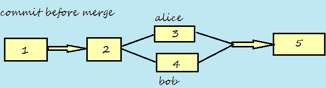

Snapshots:Pictures of an evolving tree of files.
CONCURRENCY:
============
1)Locking
2)Merge befor Commit:
Bob "patches up the conflict" with alice before he commits his code ;)....obiviously.
3)Commit before merge:
Alice has a copy of the version.
Bob has a copy of the version.
They make separate commits .....and "merge" their code if need be.

ANNOTATION:
==========
Who changed What?
1)Author name
2)Author message
3)Time stamp